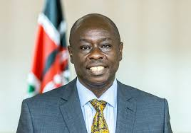
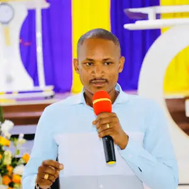
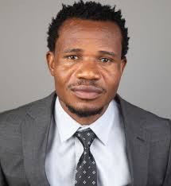
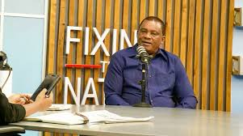
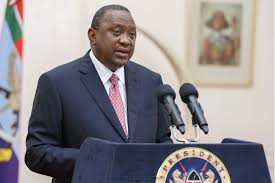

Rigathi Gachagua who was president Ruto's running mate and deputy president of Kenya was. The two had differences and their relationship in politics didn't last for a long time as Rigathi claimed Ruto was a dictator and would take advice from no body. Rigathi Gachagua exposed Ruto in claims he made that Ruto was behind the Sudans war and he was helping the Sudans paramillitary also known as the RSF who commit genocides in Sudan. The allegations sound true and look true, The RSF held a meeting in KICC which we the president would be lying if he denied the allegations for he even met with the RSF leader known as Hemedti.
Babu Owino is a prominent Kenyan politician known for his outspoken nature and advocacy for youth rights. He has been a vocal critic of government policies that he perceives as detrimental to the welfare of the Kenyan people. His commitment to social justice and accountability has made him a significant figure in Kenyan politics. He also called out his party leader Raila Odinga for his silence on corruption and the high cost of living in Kenya and his handshake with President Ruto. Babu Owino has been a strong advocate for the youth and has consistently pushed for policies that benefit the younger generation. He has also been involved in various initiatives aimed at empowering young people and addressing their concerns.
Peter Salasya is a Kenyan politician who has gained recognition for his commitment to social justice and accountability. He has been a vocal advocate for the rights of ordinary Kenyans and has consistently called out corruption within the government. His dedication to transparency and good governance has made him a respected figure in Kenyan politics. He also called out his party leader Raila Odinga for his silence on corruption and the high cost of living in Kenya and his handshake with President Ruto. Salasya's efforts to empower marginalized communities and promote equitable development have earned him a loyal following among the youth. Raila Odinga felt threatened and sent goons to beat up Salasya on a peaceful football game.
Justin Muturi is a prominent Kenyan politician known for his commitment to social justice and accountability. He has been a vocal advocate for the rights of ordinary Kenyans and has consistently called out corruption within the government. His dedication to transparency and good governance has made him a respected figure in Kenyan politics. On live tv he called out President Ruto for extra judicial killings abductions for he knew his son had been abducted by the goverment he was working for his son was later released after Ruto made a phone call. Justin Muturi was fired by President Ruto. Ruto went as far as calling Justin Muturi incompetent absurd right!. Justin claimed ruto was unfit to be in office and it was unfortunate for kenyans that he is president
Uhuru Kenyatta, the former President of Kenya, has been a significant figure in Kenyan politics. He has been known for his efforts to promote national unity and development. However, his tenure was not as smooth as he hoped for when the political relationship between him and Ruto soured. He has been a vocal critic of the current regime, particularly regarding issues of governance and accountability. Kenyatta's commitment to addressing corruption and promoting social justice has made him a respected figure among many Kenyans. On the 25th June 2024 when the youths got to parliament in order to stop the financebill from passing Uhuru Kenyatta was the first to condemn Rutos regime for not listening to the people of Kenya and resulting in such a big mess the country had ever seen, he argued that the goverment should listen to the people and on another instance told the youths to fight for their rights.
